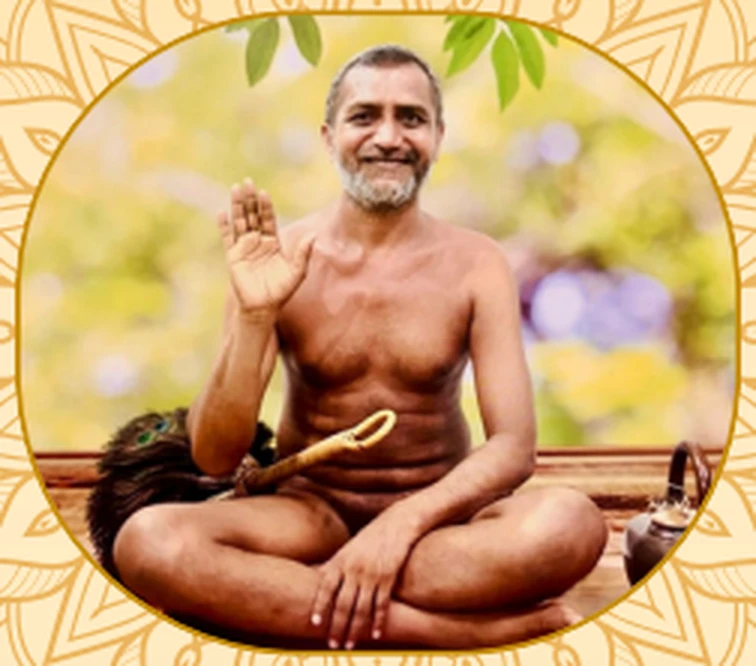

Nirmoh Vatika

Introduction
Shramana Muni Shri 108 Nirmoh Sagar Ji Maharaj was born on 01 January 1975 in Brujpur (District Panna, Madhya Pradesh) as Shri Brijesh Kumar Jain, to deeply religious parents, Shri Balchandra Ji Jain and Shrimati Gulab Bai (Gajra Bai) Ji Jain.
After completing his basic high school education, he chose the path of giving up worldly attachments, taking the sacred vow of Brahmacharya (a pure life of self-control) in 2016 at Karguan, Jhansi.
Ascending directly to full monastic self-restraint (Siddhi Muni Diksha), he received Muni Diksha on the supreme holy land of Shri Sammed Shikharji Tirth on 14 November 2021, under the divine guidance of Diksha Guru Param Pujya Acharya Shri 108 Vishudh Sagar Ji Maharaj.
A native Hindi speaker, his spiritual life is anchored in Vaiyyavratti (selfless service to saints), deep Dhyaan (contemplation), and continuous Adhyayan (sacred study).
Jain Books
Questions
Pratiyogita
From Clock to Contemplation – From Clock to Rosary
In the sacred tradition of Jainism, a mala comprises 111 beads, a count deeply rooted in spiritual significance and philosophical truth. By chanting upon the 108 beads, a saadhak may attain guidance along the path to moksh. The 3 additional beads in the mala represent the Ratnatraya (Three Jewels):
- Samyak Darshan (Right Faith)
- Samyak Gyaan (Right Knowledge)
- Samyak Charitra (Right Conduct)
Together, all these beads offer gentle guidance to the seeker upon their sacred spiritual journey.
In this depiction, Samyak Darshan, Samyak Gyaan, and Samyak Charitra serve as the 3 hands of a clock. Surrounding them are 12 petals, each inscribed 9 times with the sacred syllable OM, enabling the seeker to complete 12 × 9 = 108 recitations. Reciting the mala through this contemplative design minimizes the likelihood of error.